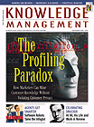
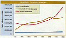
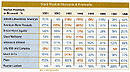

|
 November 1999 Subscribe e-Mail the Editor |
Ticker-Tape CharadeDespite crude correlations, forget about using stock market valuation as a knowledge management metric By Paul Strassmann
Formal methods of knowledge capital valuation make it possible to assess whether the stock market does or does not make a good estimate of a firm's knowledge capital. By comparing the market value (as quoted on stock exchanges) with the valuation of knowledge capital (as calculated from actual economic results), we can judge whether the marketplace is a reliable indicator. As a reminder, one can compute the knowledge capital of a firm by taking a year's worth of economic value-added—the financial returns from assets that do not show up in financial reports (see "Calculating Knowledge Capital," Oct. `99 KMM). Using this approach, I was able to show that Abbott Laboratories had steadily grown its knowledge capital from $8.2 billion in 1991 to $39.5 billion in 1998 (a 382 percent growth). Meanwhile, financial capital grew from $3.2 billion in 1991 to $5.7 billion in 1998 (a 78 percent growth). Clearly, Abbott Laboratories enjoyed a period of substantial growth in its assets. The question before us is, how did all this growth get reflected in the prices of shares? Did the stock market recognize that much of the worth of Abbott Laboratories was in intangibles, or did it look more favorably on the accumulation of financial assets counted by the accountants, as reflected in reports to shareholders? To answer this question, let us examine eight years of recent history at Abbott Laboratories.
 What we see is a pattern of investors either premium-pricing or discount-pricing shares of Abbott Laboratories. From 1992 through 1996, the market appears to have reflected the uncertainty over regulatory interventions into the pricing of pharmaceuticals and medical services. After 1996, that depressing effect seems to disappear. Particularly noteworthy is the significant disparity between market value and the calculated capitalization in 1998. I call this difference the market premium indicator, which at year-end of 1998 stood at +64 percent. The market also discounted the value of knowledge capital by -18, -19, -9 and —14 percent from 1993 through 1996. Since the financial capital during that period kept increasing, the conclusion must be that shareholders discounted the value of people, patents, brand names and market share for a four-year period.
 With the facility to estimate the premiums or the discounts from stock market valuations for an entire industrial sector, one can show how similar firms fared in the investor's perceptions of their knowledge-based assets. The table shows the stock market assessment of the worth of the knowledge capital for major pharmaceutical firms. The large year-to-year gyrations in the stock market valuations suggest that adopting stock market prices as an indicator of a firm's gain or loss in knowledge capital is too volatile to be of practical use in planning knowledge management programs. As I will show in future articles, investments in knowledge capital must be assessed independently of the ups and downs of the stock market. However, the knowledge capital metrics should maintain a realistic link with the world of finance, but that is better accomplished by watching a firm's valuation of its capital assets. In the case of a firm that has an established earning record, a high stock market valuation does not explain its knowledge capital in any instant moment. In the case of start-up businesses, a high stock-market valuation should not become a verifiable claim about the possession of knowledge capital. If you seek trustworthy and reproducible metrics by which to steer investments into knowledge management projects, it is better to watch the bottom line, than the ticker tape.
Paul A. Strassmann, formerly the Deputy Asst. Secretary of Defense and vice president of strategic planning for Xerox Corp., is the originator of the "information productivity," "return-on-management" and "knowledge capital" trademarked concepts. He is currently president of a publishing company and adjunct professor at two universities.
|